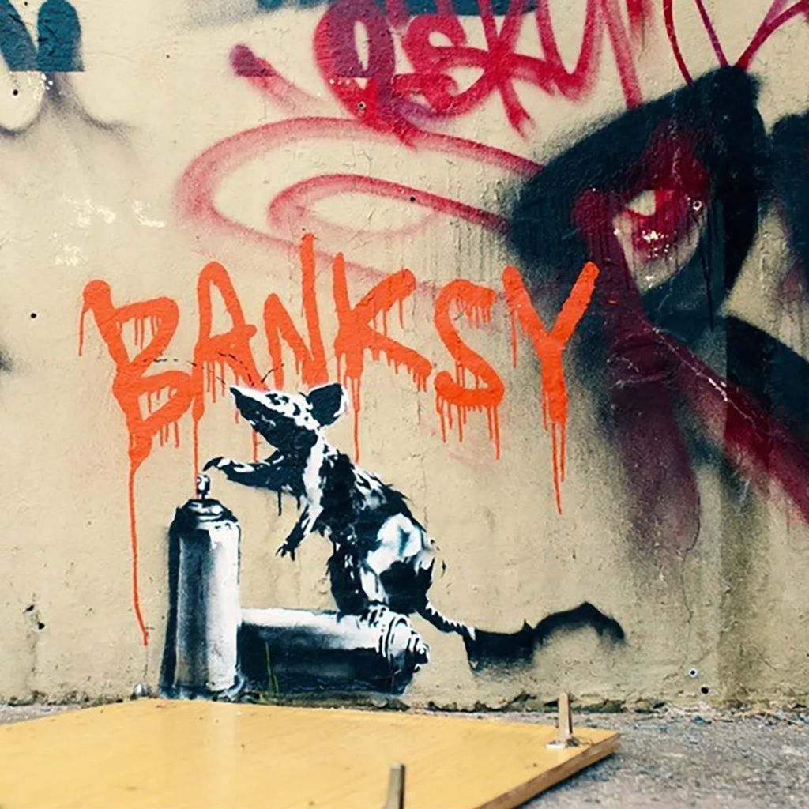

Frida Khalo
(1907-1954)

Banksy
(artista anónimo)

Yayoi Kusama
(1929-aún en activo)
Jean-Michel Basquiat
(1960-1988)
El arte no solo es bonito, también dice cosas importantes.En Contexto Creativo vamos a hablar sobre cómo el arte ha contado historias, ha sido una forma de protesta y ha cambiado la forma en que vemos el mundo. Este blog es un espacio para conocer el arte con curiosidad y mente abierta.
El arte es un buen reflejo del contexto en que se creó.
Obras que cambiaron la forma de ver la realidad.
Conoce cómo el color comunica emociones e ideas en el arte.
El arte de los pueblos originarios guarda historias y tradiciones.
La tecnología abre nuevas formas de crear arte.
El arte callejero transforma nuestra forma de ver los espacios públicos.
(1907-1954)
(artista anónimo)
(1929-aún en activo)
(1960-1988)